co lab
Co lab is a cloud storage application designed to humanize collaboration and communication and help to build organization within projects.
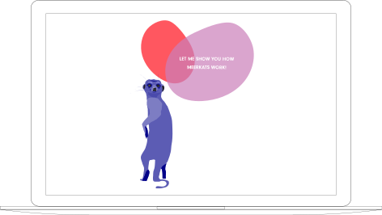ROLE
Research, UX Design, Prototyping, UI Design
TOOLS
Figma, Adobe CC, Colorable, Survey Swap
DELIVERABLES
User Surveys, Competitive Analysis, User Stories, User Flows, Content Strategy, User Personas, Wireframes, Prototypes, Usability Testing, High Fidelity Mock-Ups
overview
the user is being overwhelmed by multiple tools and is losing productivity to distraction. the principle of co lab is to facilitate effective collaboration, organization and communication to remove this distraction.
research
key survey results
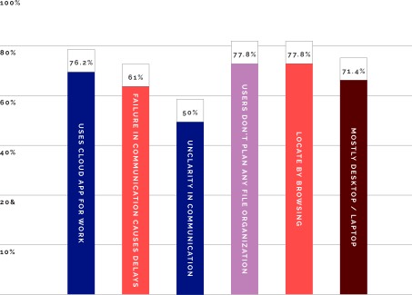competitive analysis
after performing a basic swot analysis I have identified opportunites on the market. the key opportunity is to humanize collaboration and help users with their folder organization.
user persona
john k.
Senior
graphic
designer
"if I could improve one thing it would be to humanize virtual communication with my team and clients"
frustrations
- • Failure in communication causes too many delays.
- • Too many tools and platforms for communication.
goals
- • Clarity in communication.
- • Unify communication tools.
key insights
- • Help to organize files
- • Humanize collaboration
- • Build uninterrupted workflow
information
architecture
I reviewed all aspects of my research and built high priority user stories and user flows.
user flows
As a user I want to collaborate
As a user I want to use template to organize my files befor starting a project
prototype
sketches
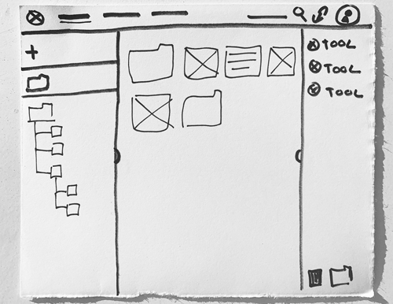wireframe
testing
before building any time consuming hi-fidelity mockups I test my wireframes and make necessary adjustments
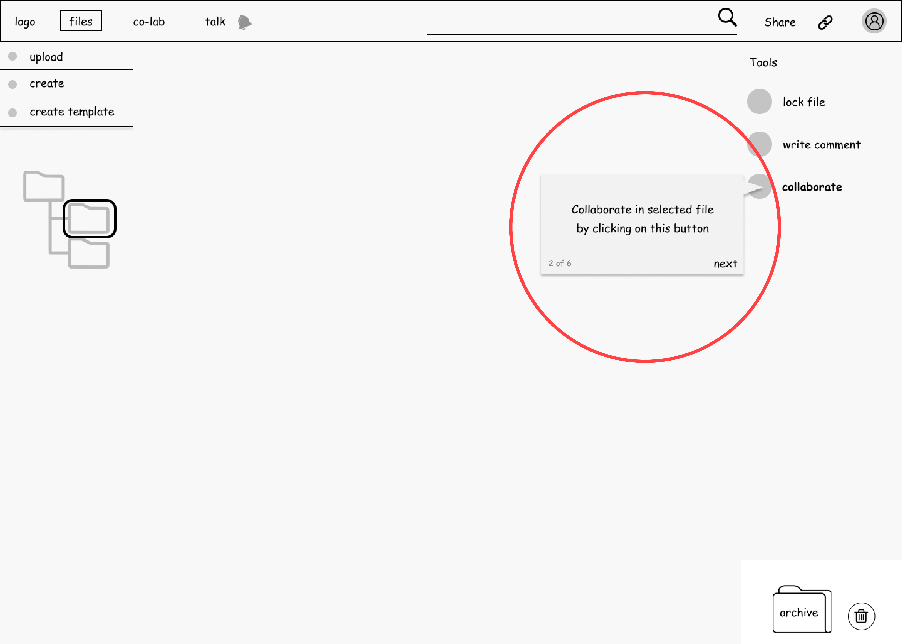discovery
on-boarding added
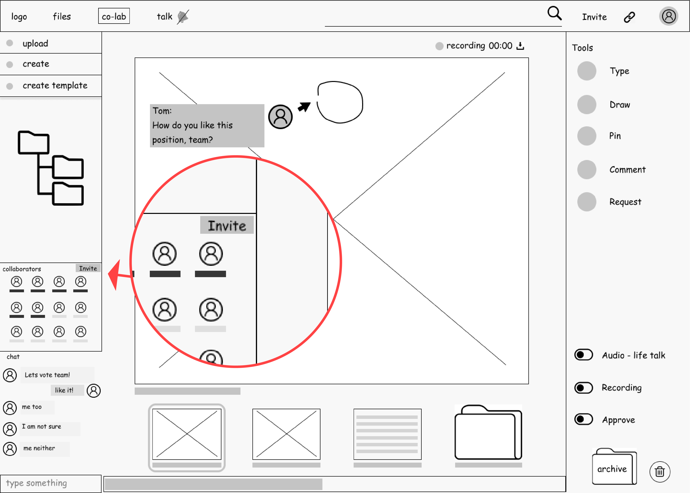discovery
invite collaborators added to user section
visual design
co lab wants to bring a simplicity and fun and also differentiate itself from the competition. what is the emotion we want to share with the user? we want to be fun and welcoming and that is why we have chosen warm tones, playful typography and comic illustrations.
typography
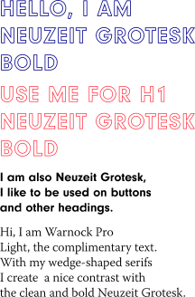pairing
Neuzeit grotesk intended to be timeless with no distinguishing characteristics. the complementary typeface is warnock pro light. it’s design features are sharp, wedge-shaped serifs.
color palette
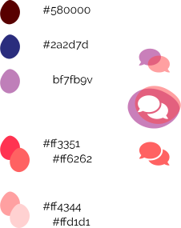analogous colors
warm colors represent a welcoming and friedly environment. in contrast the rich bule tone brings in a feeling of security and privacy.
illustrations
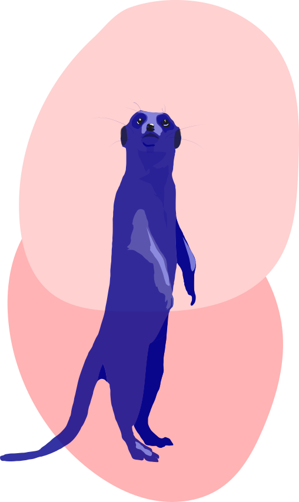 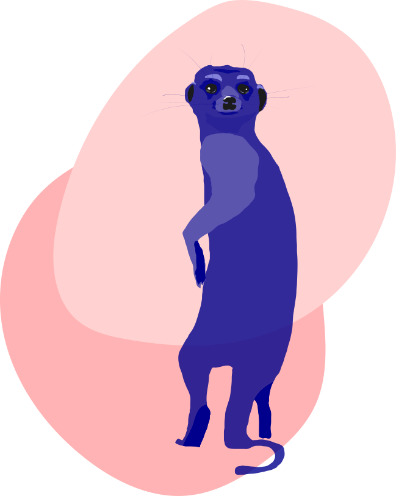meerkats
meerkats are one of the most collaborative animals.
shapes
storage app wants to differentiate itself from competition by using organic shapes.
hi-fidelity
hi fidelity mock-ups were composed to bring together the research, strategy and visual design. the key colab concepts were fully flushed out to create a delightful experience for the user.
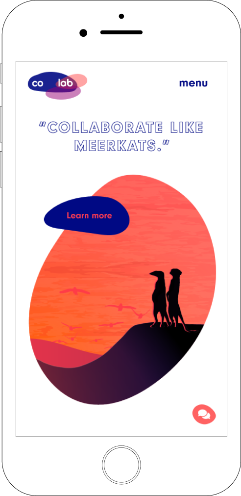 prototype →testing
user testing was a great learning experience to make sure the product fits the user needs. I user tested with small group of professionals between the ages of 23 and 45 years.
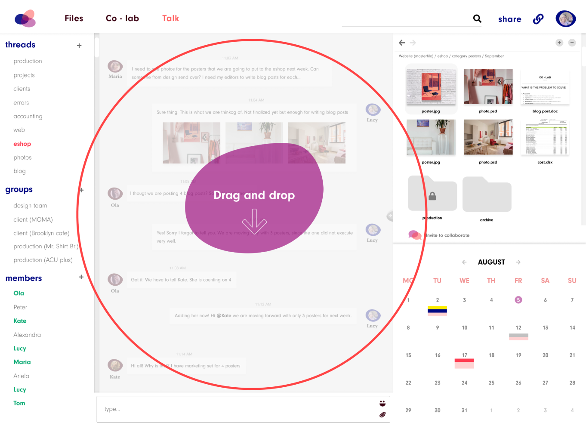discovery
the user was confused with multiple tools and did not understant where to actually collaborate.
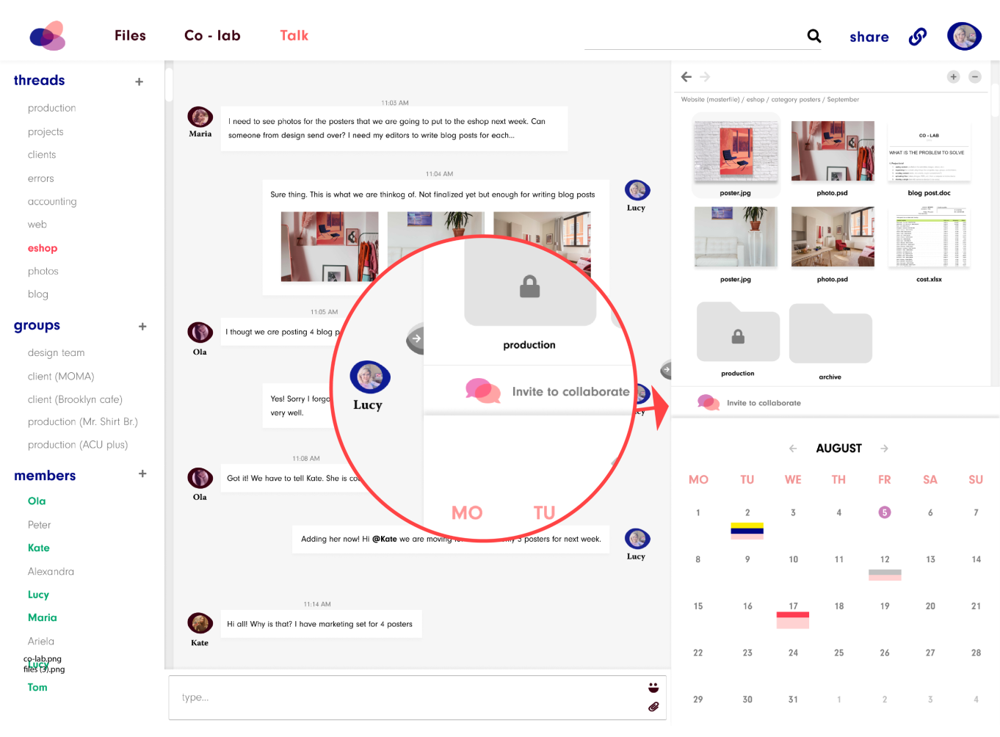discovery
the user wanted to drag and drop a folder to the chat space.
conclusion
in this project I worked with three different critical productivity tools and designed an interface that allows for the uninterrupted workflow between each of these tools. this allows uploading files into pre-designed organizational file structures, real time infile collaborating with other users, and facilitating discussions as well as planning without leaving an individual app.
self-reflection
with the 20/20 of hindsight I would have allocated a lot more resources to initial research. while observing the user behavior in user testing it was apparent that I worked with a lot of assumptions that I created early on. it is always easier to design with the right thought in mind than to adjust a design created with a false paradigm.
I would also test different demographic groups since some of the users were adjusted to certain technology.
to create a competitive product it is necessary to perform great research. I would spend more time interviewing real people and observing how they interact with their cloud product.